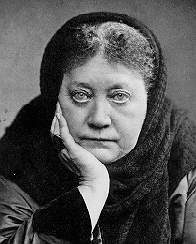
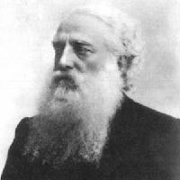
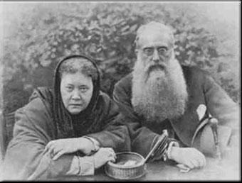

Lessons in Theosophy
Lesson 2, The History
of the Theosophical Society
Information on two of the founders of the Theosophical Society is presented here.
-- Helena Petrovna Blavatsky --

Helena von Hahn was born in Russia in 1831, and married soon-to-be Vice-Governor
Nikifor Blavatsky in 1849.
She traveled extensively, to Greece, Egypt, France, England, London, North America,
Ceylon, Japan, Burma, India, and Tibet, from 1849 to 1874. She moved to New York in 1874
(Geoffrey Barborka,
H. P. Blavatsky, Tibet and Tulku, pages 7-30).
She is usually referred to as Madame Blavatsky, H.P. Blavatsky, or H.P.B., in the literature.
For further reading on Madame Blavatsky:
- Barborka, Geoffrey, H.P. Blavatsky - the Light-Bringer
- http://www.theosophical.ca/HPB%20Light%20Bringer.htm
- Barborka, Geoffrey,
H. P. Blavatsky, Tibet and Tulku
- http://www.questbooks.net/title.cfm?bookid=40
- Blavatsky Archives,
Complete List of Items (about H. P. Blavatsky)
- http://www.blavatskyarchives.com/compitems2.htm#Blavatsky
- Blavatsky, Helena, From the Caves and Jungles of Hindostan (online)
- http://www.gutenberg.org/dirs/etext04/caves10.txt
- Blavatsky, Helena, From the Caves and Jungles of Hindostan (hardcopy)
- http://www.questbooks.net/title.cfm?bookid=40
- Blavatsky, Helena, H. P. B. Speaks
- http://blavatskyarchives.com/hpbspeaks.htm
- Blavatsky Net
- http://blavatsky.net/
- Blavatsky Net, Articles by H. P. Blavatsky
- http://www.blavatsky.net/blavatsky/blavatsky-articles.htm
- Blavatsky Study Center
- http://www.blavatskyarchives.com/index.htm
- Caldwell, Daniel H., The Esoteric World of Madame Blavatsky: Reminiscences and Impressions by Those Who Knew Her (online)
- http://www.theosophical.org/resources/books/esotericworld/index.php
- Caldwell, Daniel H., The Esoteric World of Madame Blavatsky: Insights into the Life of a Modern Sphin (hardcopy)
- http://www.questbooks.net/title.cfm?bookid=374
- Mead, G., Concerning H. P. B., Stray Thoughts on Theosophy
- http://www.theosophical.ca/Concerning%20HPB.htm
- Sinnett, A.P., Incidents in the Life of Madame Blavatsky
- http://www.theosophical.ca/IncidentsLifeBlavatsky1.htm
- Theosophy Magazine, "The Credential of H. P. Blavatsky"
- http://www.wisdomworld.org/setting/hpb.html
- Wachtmeister, Constance, Reminiscences of H.P. Blavatsky and The Secret Doctrine
- http://www.katinkahesselink.net/his/hpb_wach.htm
-- Henry Steel Olcott --

Another Founder of the Society, Henry Steel Olcott, was born in New Jersey in 1832, and distinguished himself serving
in the Northern forces during the American Civil War. During the administration of his duties he was awarded
the rank of Colonel, although he did not serve on the battlefield
(Geoffrey Barborka,
H. P. Blavatsky, Tibet and Tulku, pages 148-149).
He is usually referred to as Colonel Olcott in the literature.
Here is a web page on Henry Olcott’s impact on religion in Sri Lanka:
The White Buddhist: Henry Steel Olcott and the Sinhalese Buddhist Revival
http://aryasangha.org/olcott-prothero.htm
For further reading on Colonel Olcott:
-- Their First Meeting --
Madame Blavatsky met Colonel Olcott in Vermont, U.S.A. on October 14, 1874. She was there because
of her interest in a local spiritual phenomina, and Colonel Olcott interviewed her as part his
job as a reporter. Thus, their life-long friendship began
(Geoffrey Barborka,
H. P. Blavatsky, Tibet and Tulku, pages 146-149).
Colonel Olcott continued his interest in mediums, writing on the subject, and
creating a group called “The Miracle Club” for the purpose of continuing further investigations.
“In later years Colonel Olcott looked upon this effort as an initial attempt to organize a
society, or a nucleus of people along the lines of the Theosophical Society.”
(Geoffrey Barborka,
H. P. Blavatsky, Tibet and Tulku, page 44).
“Madame Blavatsky commenced holding gatherings in the parlor of her suite of rooms, inviting
people who were interested in travels and in Spiritualism, as well as in subjects which would be
called metaphysical today....
“More interested people joined their group, untill, in the the summer of 1875, the first meeting
of the Theosophical Society was called to order.” (Geoffrey Barborka,
H. P. Blavatsky, Tibet and Tulku, page 44)
Madame Blavatsky’s insight into psychic matters, and Colonel Olcott’s orgainzationa skills and public-speaking
skills were a perfect fit. Together, they set out to create a Society that would change the western religious world.

For more information on the founders:
Founders of the Theosophical Society
http://www.ts-adyar.org/founders.html
For more information on the history of the Theosphical Society:
-- Schism and Division --
Madame Blavatsky died in 1891. Afterwards, a power struggle developed among the leaders of the
Society. On one side was Colonel Olcott and Annie Besant. On the other side was William Q. Judge.
The two groups went their separate ways.
Colonel Olcott and Annie Besant went to India and established the headquarters of their organization there.
The headquarters of that organization is still there, in Adyar, India, called the Theosophical
Society (Adyar). The organization has chapters in several countries. The office of the American Section
is located in Wheaton, Illinois. Here are the Adyar and Wheaton web sites:
Theosophical Society, Adyar, India
http://www.ts-adyar.org
This group’s American section in Wheaton, Illinois, USA
http://www.theosophical.org
For more reading on Annie Besant.
Some other names associated with the Adyar group
are Charles Leadbeater,
C. Jinaradasa,
and George
Arundale.
William Judge stayed in America.
Today, the headquarters of that organization is in Pasadena, California, called the Theosophical
Society (Pasadena). Here is the Pasadena web site:
Theosophical Society,
Pasadena, California USA
http://www.theosociety.org
Some other names associated with the Pasadena group
are Katherine Tingely and Gottfried de Purucker.
Mr. Robert Crosbie (who
was a member of William Judge’s organization) was among a group of people that
broke away and started their own organization,
the United Lodge of Theosophists, in 1909. The headquarters of that
organization is in Los Angeles, California. Here is the U.L.T. web site:
United Lodge of Theosophists
Los Angeles, California, USA
http://www.ult.org
Another name associated with the U.L.T. group is B. P. Wadia.
~~~
As a result, today, three different organizations carry on the Theosophical name.
-- Neo-Theosophy --
After Madame Blavatsky died, a number of books were written by Annie Besant and
Charles Leadbeater on Theosophy. Some followers of other traditions
within Theosophy will feel the post-Blavatsky ideas in these books are not genuine
Theosophical ideas, and label such ideas as “Neo-Theosophy.” (Most of the
quotations in this webpage are from so-called “Neo-Theosophical” writers.)
It is understood that not all Theosophists will accept these ideas.
The reader is advised to be sensitive to the issue of Theosophy/Neo-Theosophy.
-- The Theosophical Society today --
Today. the various forms of Theosophy are strong, and have members and groups
around the world. Membership and interest, while growing slowly, do continue to
grow. As Charles Leadbeater wrote,
“... it is impossible to estimate the vast amount of good [The Theosophical Society] has done in every department of human life. Its influence cannot in the least be measured by the number of its members or branches, although that is by no means insignificant, since it extends to every civilized part of the globe. But in each field of human endeavor it has sounded its characteristic note, the reverberations of which multiply around us in the words and work of statesmen and scientists, literary men and artists, and many others, of whom, great numbers perhaps have never even heard the word Theosophy. It has drawn attention to the realities of the invisible world and the power of mind. It has voiced the claims in outward life of the fact of brotherhood, seeking no uniformity in human life, but the organization for mutual support of widely different individuals, each of whom shall be strong in his special type, and all of whom shall be bound together by the indissoluble bond of respect for the man who is different from oneself. It has brought together East and West as never before; it has demanded fair play in the comparison of religions, and revealed with unmistakable clearness their essential unity of teaching and their common source. And it has brought thousands to the feet of the Masters to serve Them with all their power and with all their hearts for the good of mankind
for all time to come.” (Charles Leadbeater, The Masters and the Path,
paragraph 1007 online or
pages 221-222 hardcopy)
Next: Lesson 3, Reincarnation and Karma
|
 |
|
|
|
|
 |
 |
 |
|
|
|
|
copyright © Nick Mojzesz,
2005, 2006, & 2007
all rights reserved. |
| |
| |
|